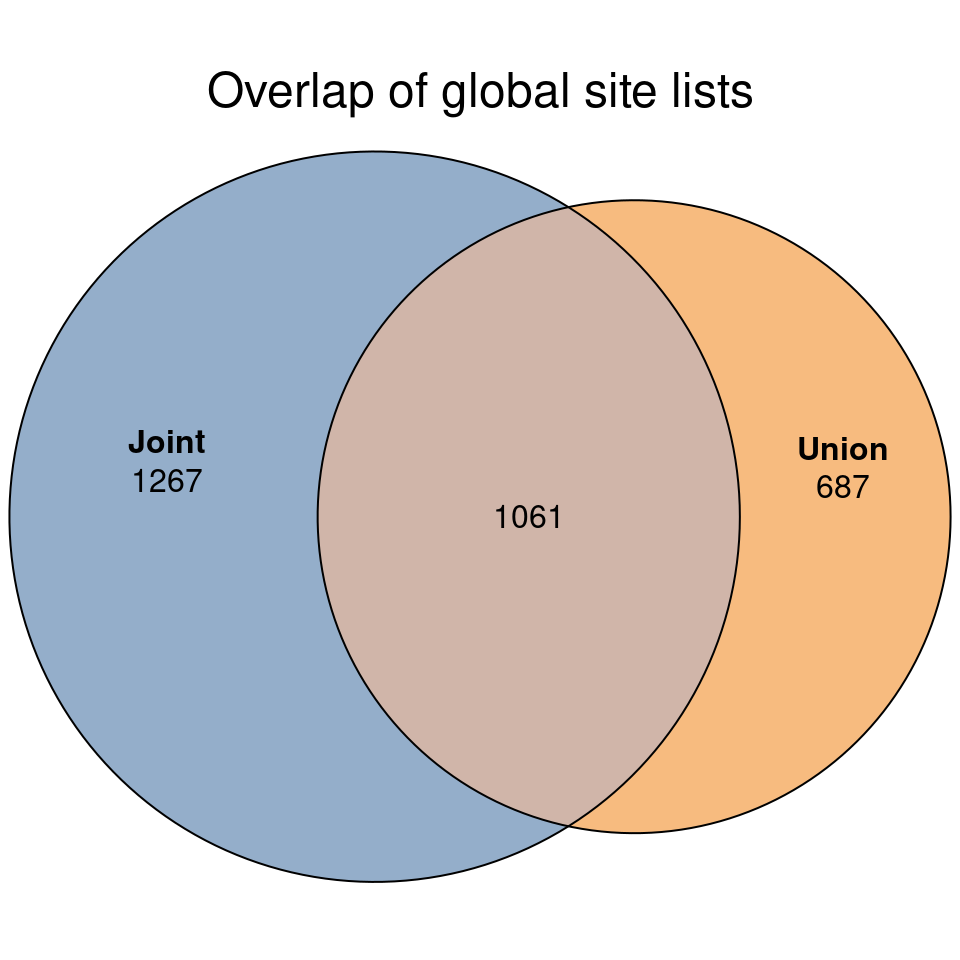
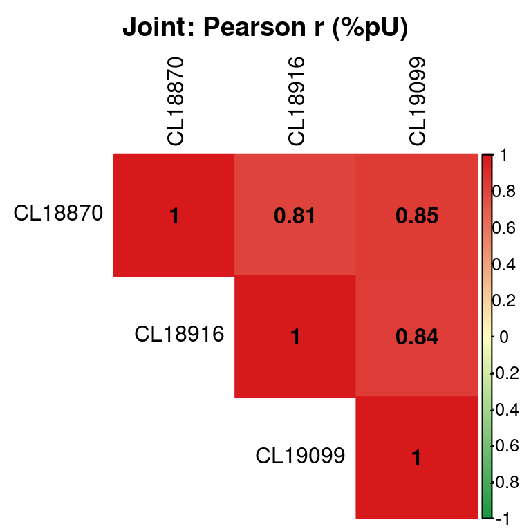
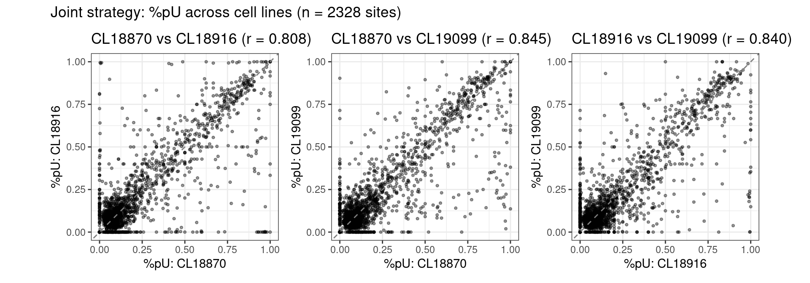
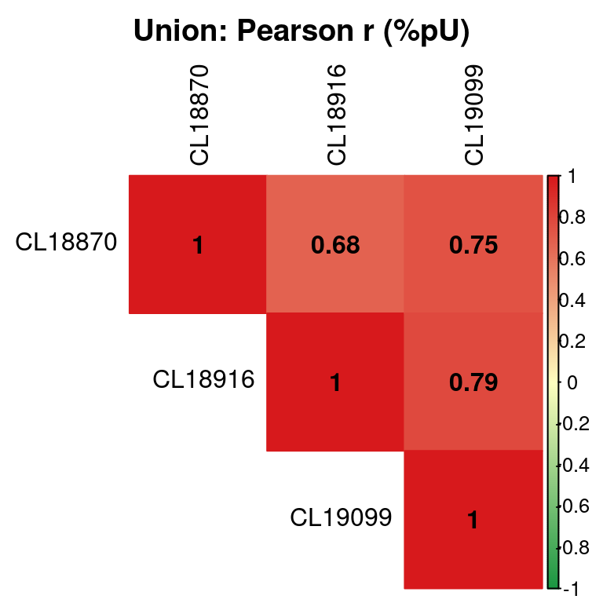
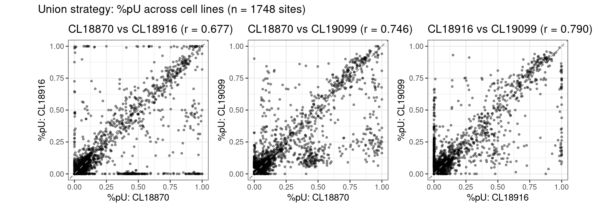
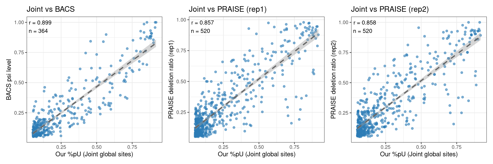
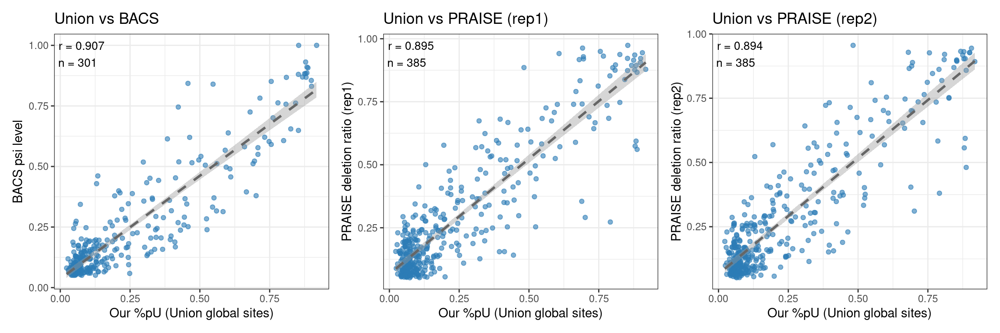

Last updated: 2026-06-12
Checks: 6 1
Knit directory: pumseq/
This reproducible R Markdown analysis was created with workflowr (version 1.7.0). The Checks tab describes the reproducibility checks that were applied when the results were created. The Past versions tab lists the development history.
The R Markdown is untracked by Git. To know which version of the R
Markdown file created these results, you’ll want to first commit it to
the Git repo. If you’re still working on the analysis, you can ignore
this warning. When you’re finished, you can run
wflow_publish to commit the R Markdown file and build the
HTML.
Great job! The global environment was empty. Objects defined in the global environment can affect the analysis in your R Markdown file in unknown ways. For reproduciblity it’s best to always run the code in an empty environment.
The command set.seed(20260202) was run prior to running
the code in the R Markdown file. Setting a seed ensures that any results
that rely on randomness, e.g. subsampling or permutations, are
reproducible.
Great job! Recording the operating system, R version, and package versions is critical for reproducibility.
Nice! There were no cached chunks for this analysis, so you can be confident that you successfully produced the results during this run.
Great job! Using relative paths to the files within your workflowr project makes it easier to run your code on other machines.
Great! You are using Git for version control. Tracking code development and connecting the code version to the results is critical for reproducibility.
The results in this page were generated with repository version 5f3f0e6. See the Past versions tab to see a history of the changes made to the R Markdown and HTML files.
Note that you need to be careful to ensure that all relevant files for
the analysis have been committed to Git prior to generating the results
(you can use wflow_publish or
wflow_git_commit). workflowr only checks the R Markdown
file, but you know if there are other scripts or data files that it
depends on. Below is the status of the Git repository when the results
were generated:
Ignored files:
Ignored: .Rhistory
Untracked files:
Untracked: analysis/qc_joint_union.Rmd
Unstaged changes:
Modified: analysis/index.Rmd
Note that any generated files, e.g. HTML, png, CSS, etc., are not included in this status report because it is ok for generated content to have uncommitted changes.
There are no past versions. Publish this analysis with
wflow_publish() to start tracking its development.
output_root <- "/project2/xinhe/xsun/pumseq/pumseq_results/joint"
joint_run <- "test_3CL_mRNA"
union_run <- "test_3CL_mRNA_union"
results_root <- "/project2/xinhe/xsun/pumseq/pumseq_results"
cell_lines <- c("CL18870", "CL18916", "CL19099")
joint_bed <- file.path(output_root, joint_run, "joint_mRNA.pseusite.bed")
union_bed <- file.path(output_root, union_run, "union_mRNA.pseusite.bed")
pooled_files <- setNames(
file.path(results_root, cell_lines, "pooled_sites_chisq", "pooled_mRNA.txt"),
cell_lines
)We are trying to find a way to call sites jointly across samples. It’s much easier in QTL analysis to have a common set of sites/features across all samples, then we can associate with genotypes.
We tried two strategies for getting a common mRNA pU site list across cell lines. Both end with the same two kinds of output, used for downstream analyses:
*_mRNA.pseusite.bed / .txt.gz) — the sites
considered “real” pU sites for this cohort, one row of cross-cell-line
pooled stats (C, T, depth, ratio, pval, fdr, rate_diff, …) per
site.*_mRNA.global_sites.txt.gz,
.ratio_matrix.txt.gz, .depth_matrix.txt.gz) —
for every site in the global list, every cell line’s own %pU
(C/(C+T)) and read depth (C+T), computed
directly from that cell line’s raw mpileup counts with no
per-cell-line depth or significance filter (a cell line is
NA only if it has zero reads at that site). The annotation
table has a fixed number of columns regardless of cohort size; the
matrices gain one column per cell line added.fdr < fdr_chisq & rate_diff > ratediff_chisq & depth >= out_depth
define the global site list (joint_mRNA.pseusite.bed).joint_mRNA.global_sites.*.pooled_sites_chisq/pooled_mRNA.txt) and filter by
fdr < fdr_chisq_celline & rate_diff > ratediff_chisq & depth >= out_depth & n_samples >= min_replicates
-> per-cell-line called sites.(ref, pos, strand) across all cell
lines’ called sites, recording which cell line(s) called each site
(called_in).joint_mRNA.pseusite.txt.gz) — fdr here is the
Joint run’s genome-wide value, not recomputed. The
union itself, with no further filtering, is the global
site list (union_mRNA.pseusite.bed).union_mRNA.global_sites.*.The key difference is which sites end up in the global list: Joint requires significance in the pooled (mega-sample) test, while Union requires significance in at least one individual cell line. Union’s list is therefore typically a superset of Joint’s, and can include sites that are significant in one cell line but diluted away once pooled with the others.
read_bed_sites <- function(path) {
bed <- fread(path, header = FALSE,
col.names = c("ref", "start", "pos", "name", "score", "strand"))
bed[, ref := as.character(ref)]
unique(bed[, .(ref, pos, strand)])
}
joint_sites <- read_bed_sites(joint_bed)
union_sites <- read_bed_sites(union_bed)
setkey(joint_sites, ref, pos, strand)
setkey(union_sites, ref, pos, strand)
cat("Joint strategy final sites :", nrow(joint_sites), "\n")Joint strategy final sites : 2328 cat("Union strategy final sites :", nrow(union_sites), "\n")Union strategy final sites : 1748 site_id <- function(dt) dt[, paste(ref, pos, strand, sep = ":")]
fit <- euler(list(Joint = site_id(joint_sites), Union = site_id(union_sites)))
plot(fit, quantities = TRUE, main = "Overlap of global site lists",
fills = list(fill = c("#4E79A7", "#F28E2B"), alpha = 0.6))
For every site in a strategy’s final list, look up that site’s
per-cell-line conversion rate (ratio = C / (C+T), i.e. %pU
as a fraction) from each cell line’s own
pooled_sites_chisq/pooled_mRNA.txt. A site missing from a
given cell line’s table (insufficient depth in that cell line) becomes
NA for that cell line.
load_ratio <- function(path) {
dt <- fread(path, select = c("ref", "pos", "strand", "ratio"),
colClasses = list(character = c("ref", "strand")))
setkey(dt, ref, pos, strand)
dt
}
ratios <- lapply(pooled_files, load_ratio)build_pu_matrix <- function(sites, ratios) {
out <- copy(sites)
for (cl in names(ratios)) {
out <- merge(out, ratios[[cl]], by = c("ref", "pos", "strand"), all.x = TRUE)
setnames(out, "ratio", cl)
}
out
}
joint_pu <- build_pu_matrix(joint_sites, ratios)
union_pu <- build_pu_matrix(union_sites, ratios)cl_pairs <- combn(cell_lines, 2, simplify = FALSE)
plot_pu_pair <- function(pu, pair) {
sub <- pu[, ..pair]
sub <- sub[complete.cases(sub)]
r <- cor(sub[[1]], sub[[2]], method = "pearson")
ggplot(pu, aes(x = .data[[pair[1]]], y = .data[[pair[2]]]))+
geom_point(alpha = 0.4, size = 0.8)+
geom_abline(slope = 1, intercept = 0, linetype = "dashed", color = "grey50")+
coord_equal(xlim = c(0, 1), ylim = c(0, 1))+
labs(title = sprintf("%s vs %s (r = %.3f)", pair[1], pair[2], r),
x = sprintf("%%pU: %s", pair[1]), y = sprintf("%%pU: %s", pair[2]))+
theme_bw()
}pearson <- cor(joint_pu[, ..cell_lines], use = "pairwise.complete.obs", method = "pearson")
#knitr::kable(pearson, digits = 3, caption = "Joint: Pearson correlation of %pU")corrplot(pearson, method = "color", type = "upper", addCoef.col = "black",
tl.col = "black", title = "Joint: Pearson r (%pU)", mar = c(0,0,2,0),
col = colorRampPalette(c("#1a9641", "#ffffbf", "#d7191c"))(200))
joint_scatter <- lapply(cl_pairs, function(p) plot_pu_pair(joint_pu, p))
wrap_plots(joint_scatter, ncol = 3) +
plot_annotation(title = sprintf("Joint strategy: %%pU across cell lines (n = %d sites)", nrow(joint_pu)))
pearson_u <- cor(union_pu[, ..cell_lines], use = "pairwise.complete.obs", method = "pearson")
#knitr::kable(pearson_u, digits = 3, caption = "Union: Pearson correlation of %pU")corrplot(pearson_u, method = "color", type = "upper", addCoef.col = "black",
tl.col = "black", title = "Union: Pearson r (%pU)", mar = c(0,0,2,0),
col = colorRampPalette(c("#1a9641", "#ffffbf", "#d7191c"))(200))
union_scatter <- lapply(cl_pairs, function(p) plot_pu_pair(union_pu, p))
wrap_plots(union_scatter, ncol = 3) +
plot_annotation(title = sprintf("Union strategy: %%pU across cell lines (n = %d sites)", nrow(union_pu)))
We benchmark the global site lists from both
strategies against two independent published pU datasets. For each
global site, ratio is the pooled %pU (C / (C+T)) across all
three cell lines (for Union this value is looked up from the Joint run,
see Strategy descriptions).
Both published datasets use genomic coordinates, matching our
ref / pos / strand columns. BACS
mRNA sites with feature == "ncRNA" are excluded. PRAISE
sites are filtered to NM_ / XM_ (mRNA)
accessions, excluding NR_ / XR_ (ncRNA).
path_BACS <- "/project2/xinhe/xsun/pumseq/data_others/pU_PMID39349603.xlsx"
path_PRAISE <- "/project2/xinhe/xsun/pumseq/data_others/pU_PMID36997645.xlsx"
# BACS mRNA: Supplementary Table 8 (sheet 6) - HeLa polyA+ RNA
mrna_BACS <- readxl::read_excel(path_BACS, sheet = 6, skip = 2)
mrna_BACS_clean <- mrna_BACS %>%
filter(feature != "ncRNA") %>%
rename(psi_level = `Ψ level`) %>%
mutate(chr_num = sub("^chr", "", chr),
pos_num = as.integer(pos),
psi_level = as.numeric(psi_level))
# PRAISE mRNA+ncRNA: Supplementary Dataset 2 (sheet 2) - HEK293T
# Filter to mRNA only: keep NM_ and XM_ accessions.
mrna_PRAISE <- readxl::read_excel(path_PRAISE, sheet = 2, skip = 2)
mrna_PRAISE_clean <- mrna_PRAISE %>%
filter(str_starts(chr_name, "NM_") | str_starts(chr_name, "XM_")) %>%
mutate(
chr_num = sub("^chr", "", str_extract(chr_site, "^chr[^_]+")),
genomic_start = as.integer(str_extract(chr_site, "(?<=_)[0-9]+")),
genomic_end = as.integer(coalesce(
str_extract(chr_site, "(?<=-)[0-9]+$"),
str_extract(chr_site, "(?<=_)[0-9]+")
))
) %>%
filter(!is.na(chr_num))
cat("BACS mRNA sites :", nrow(mrna_BACS_clean), "\n")BACS mRNA sites : 1294 cat("PRAISE mRNA sites:", nrow(mrna_PRAISE_clean), "\n")PRAISE mRNA sites: 1888 load_global_sites <- function(path) {
dt <- fread(path, select = c("ref", "pos", "strand", "ratio"),
colClasses = list(character = c("ref", "strand")))
as.data.frame(dt)
}
joint_global <- load_global_sites(file.path(output_root, joint_run, "joint_mRNA.global_sites.txt.gz"))
union_global <- load_global_sites(file.path(output_root, union_run, "union_mRNA.global_sites.txt.gz"))For each strategy’s global site list we report how many sites overlap
BACS and PRAISE (by exact chr/pos/strand for BACS, and by
chr + genomic range for PRAISE), what fraction of
our sites that represents, and what fraction of the
published sites we recover.
overlap_bacs <- function(dt) {
dt %>%
mutate(chr_num = ref) %>%
inner_join(mrna_BACS_clean, by = c("chr_num", "pos" = "pos_num", "strand"))
}
overlap_praise <- function(dt) {
dt %>%
mutate(chr_num = ref) %>%
inner_join(mrna_PRAISE_clean, by = "chr_num", relationship = "many-to-many") %>%
filter(pos >= pmin(genomic_start, genomic_end) &
pos <= pmax(genomic_start, genomic_end))
}
summarize_overlap <- function(dt, label) {
ov_bacs <- overlap_bacs(dt)
ov_praise <- overlap_praise(dt)
data.frame(
Strategy = label,
n_global_sites = nrow(dt),
n_BACS_overlap = nrow(ov_bacs),
pct_ours_in_BACS = round(nrow(ov_bacs) / nrow(dt) * 100, 1),
pct_BACS_in_ours = round(nrow(ov_bacs) / nrow(mrna_BACS_clean) * 100, 1),
n_PRAISE_overlap = nrow(ov_praise),
pct_ours_in_PRAISE = round(nrow(ov_praise) / nrow(dt) * 100, 1),
pct_PRAISE_in_ours = round(nrow(ov_praise) / nrow(mrna_PRAISE_clean) * 100, 1)
)
}
overlap_summary <- rbind(
summarize_overlap(joint_global, "Joint"),
summarize_overlap(union_global, "Union")
)
knitr::kable(
overlap_summary,
col.names = c("Strategy", "# global sites",
"# overlap BACS", "% ours in BACS", "% BACS in ours",
"# overlap PRAISE", "% ours in PRAISE", "% PRAISE in ours"),
caption = "Overlap between our global site lists and published mRNA pU data"
)| Strategy | # global sites | # overlap BACS | % ours in BACS | % BACS in ours | # overlap PRAISE | % ours in PRAISE | % PRAISE in ours |
|---|---|---|---|---|---|---|---|
| Joint | 2328 | 364 | 15.6 | 28.1 | 520 | 22.3 | 27.5 |
| Union | 1748 | 301 | 17.2 | 23.3 | 385 | 22.0 | 20.4 |
For the overlapping sites, we compare our pooled %pU
(ratio) against the BACS Ψ level and the PRAISE deletion
ratios (replicate 1 and 2).
make_pub_scatter <- function(df, xcol, ycol, ttl, xlab, ylab) {
if (nrow(df) == 0) {
return(
ggplot() +
annotate("text", x = 0.5, y = 0.5, label = "No overlapping sites",
size = 4, color = "grey50") +
labs(title = ttl, x = xlab, y = ylab) +
theme_bw(base_size = 11)
)
}
r_val <- cor(df[[xcol]], df[[ycol]], method = "pearson")
ggplot(df, aes(x = .data[[xcol]], y = .data[[ycol]])) +
geom_point(alpha = 0.6, size = 1.5, color = "#2c7bb6") +
geom_smooth(method = "lm", se = TRUE, color = "grey40", linetype = "dashed") +
annotate("text", x = -Inf, y = Inf,
label = sprintf("r = %.3f\nn = %d", r_val, nrow(df)),
hjust = -0.1, vjust = 1.3, size = 3.5) +
labs(title = ttl, x = xlab, y = ylab) +
theme_bw(base_size = 11)
}j_bacs <- overlap_bacs(joint_global)
j_praise <- overlap_praise(joint_global)
p1 <- make_pub_scatter(j_bacs, "ratio", "psi_level",
"Joint vs BACS", "Our %pU (Joint global sites)", "BACS psi level")
p2 <- make_pub_scatter(j_praise, "ratio", "rep1_deletion_ratio",
"Joint vs PRAISE (rep1)", "Our %pU (Joint global sites)", "PRAISE deletion ratio (rep1)")
p3 <- make_pub_scatter(j_praise, "ratio", "rep2_deletion_ratio",
"Joint vs PRAISE (rep2)", "Our %pU (Joint global sites)", "PRAISE deletion ratio (rep2)")
wrap_plots(p1, p2, p3, ncol = 3)
u_bacs <- overlap_bacs(union_global)
u_praise <- overlap_praise(union_global)
p1 <- make_pub_scatter(u_bacs, "ratio", "psi_level",
"Union vs BACS", "Our %pU (Union global sites)", "BACS psi level")
p2 <- make_pub_scatter(u_praise, "ratio", "rep1_deletion_ratio",
"Union vs PRAISE (rep1)", "Our %pU (Union global sites)", "PRAISE deletion ratio (rep1)")
p3 <- make_pub_scatter(u_praise, "ratio", "rep2_deletion_ratio",
"Union vs PRAISE (rep2)", "Our %pU (Union global sites)", "PRAISE deletion ratio (rep2)")
wrap_plots(p1, p2, p3, ncol = 3)
sessionInfo()R version 4.2.0 (2022-04-22)
Platform: x86_64-pc-linux-gnu (64-bit)
Running under: CentOS Linux 7 (Core)
Matrix products: default
BLAS/LAPACK: /software/openblas-0.3.13-el7-x86_64/lib/libopenblas_haswellp-r0.3.13.so
locale:
[1] C
attached base packages:
[1] stats graphics grDevices utils datasets methods base
other attached packages:
[1] stringr_1.5.1 dplyr_1.1.4 patchwork_1.3.2.9000
[4] eulerr_6.1.1 corrplot_0.92 ggplot2_4.0.3
[7] data.table_1.14.2
loaded via a namespace (and not attached):
[1] tidyselect_1.2.0 xfun_0.41 bslib_0.3.1 lattice_0.20-45
[5] splines_4.2.0 vctrs_0.6.5 generics_0.1.4 htmltools_0.5.2
[9] mgcv_1.8-40 yaml_2.3.5 utf8_1.2.2 rlang_1.1.2
[13] R.oo_1.24.0 jquerylib_0.1.4 later_1.3.0 pillar_1.9.0
[17] R.utils_2.11.0 glue_1.6.2 withr_2.5.0 RColorBrewer_1.1-3
[21] S7_0.2.0 readxl_1.4.0 lifecycle_1.0.4 gtable_0.3.6
[25] workflowr_1.7.0 cellranger_1.1.0 R.methodsS3_1.8.1 evaluate_0.15
[29] labeling_0.4.2 knitr_1.39 fastmap_1.1.0 httpuv_1.6.5
[33] fansi_1.0.3 highr_0.9 Rcpp_1.0.12 promises_1.2.0.1
[37] scales_1.4.0 jsonlite_1.8.0 farver_2.1.0 fs_1.5.2
[41] digest_0.6.29 stringi_1.7.6 polyclip_1.10-0 grid_4.2.0
[45] rprojroot_2.0.3 cli_3.6.1 tools_4.2.0 magrittr_2.0.3
[49] sass_0.4.1 tibble_3.2.1 dichromat_2.0-0.1 pkgconfig_2.0.3
[53] Matrix_1.5-3 polylabelr_0.2.0 rmarkdown_2.25 rstudioapi_0.13
[57] R6_2.5.1 nlme_3.1-157 git2r_0.30.1 compiler_4.2.0